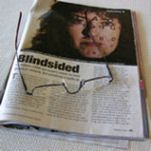
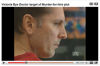
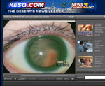

Many newspapers and television stations across the United States have carried stories exposing the risks of LASIK and the dark side of the lucrative practice of LASIK. Even the nation's more prestigious investigative news sources have sought to expose truths about the LASIK industry, often using very frank terminology. The Washington Post, for example, concludes: "Trust No One, Not Even Your Eye Doctor."
The patients who regret laser eye surgery: My life’s stood still since then’ - The Guardian 4/18/2023
From the article: According to Reeves, the procedure left debris behind her corneal flap, which ruined her eyesight and causes double vision, intense migraines and eye strain. She finds it impossible to stare at screens for an extended period of time, and can no longer enjoy her hobbies...
Dr Morris Waxler, a retired FDA adviser who voted to approve Lasik in the 1990s, is now one of its biggest critics. He says he regrets his role in bringing the procedure to the public.
According to his own analysis of industry data, the complication rate of Lasik falls between 10% and 30%. One investigation of an FDA database by the reporter Jace Larson found more than 700 complaints of severe pain, described as “worse than childbirth” or as if “their eyeballs would stick to their eyelids almost every night”.
Lasik Patients Should Be Warned of Complications, F.D.A. Draft Says - The New York Times 12/7/2022
From the article: Patients considering Lasik surgery should be warned that they may be left with double vision, dry eyes, difficulty driving at night and, in rare cases, persistent eye pain, according to draft guidance by the Food and Drug Administration...
But according to the F.D.A.’s draft guidance, a few Lasik patients have become severely depressed, even considering suicide, after experiencing complications from the surgery...
The F.D.A. is proposing a patient “decision checklist” that describes Lasik surgery, noting that corneal tissue is “vaporized” and that corneal nerves “may not fully recover” from the incisions, “resulting in dry eyes and/or chronic pain.” Even after healing, the draft says, the cornea will never be as strong as it was before the surgery.
LASIK eye surgery should be taken off market, says whistleblower - CBS News 11/14/2019
From the article: Abraham Rutner said LASIK surgery damaged his vision and nearly ruined his life. "It's a devastation that I can't even explain," Rutner told CBS News medical contributor Dr. Tara Narula...
[Edward] Boshnick estimates he's treated thousands of patients with LASIK complications...
Paula Cofer had surgery 19 years ago, "and from day one my vision was an absolute train wreck and it still is today," she said. She started a LASIK complications support group on Facebook and quickly found she was not alone. "You really have to understand you're risking your only pair of eyes," Cofer said...
"Essentially we ignored the data on vision distortions that persisted for years," said Morris Waxler, a retired FDA adviser who voted to approve LASIK. He now says that vote was a mistake.
Lasik MD patients allege nerve damage, file class action lawsuit - CTV News 11/21/2019
From the article: At least two Canadians are suing a national chain of laser eye surgery clinics and asking others to join them after they developed a rare and extremely painful complication.
Christopher Ouellet and Krystel Terzian were supposed to see better following the popular elective procedure, but they allege the cornea operation performed at Lasik MD clinics instead triggered unrelenting eye pain. Ouellet is the lead plaintiff in the new first-of-its-kind class action lawsuit.
“It completely ruined my life. It destroyed everything. It made me lose my job. It made me lose the things I like to do in life,” said Ouellet. The pain has made him contemplate suicide at times, he added. “I want justice, compensation and I want them to pay for what they did to me and the others. And they're going to pay.”
Should LASIK Eye Surgery Be Banned? Some People Say Yes - Healthline 11/21/2019
From the article:
In 2016, Cronin was found dead of a single, self-inflicted bullet wound. He was 27 years old. In the suicide note he left on his body, he wrote that the after-effects of LASIK surgery were one reason he had ended his life. Burleson [Cronin's mother], an OB-GYN who prides herself in understanding the medical world, told Healthline she’s not alone in her grief. Through support groups and social media, she’s connected with 23 others who have lost a family member to suicide after experiencing complications from LASIK...
“The FDA needs to pull the plug on the entire industry,” [Paula Cofer] said...
“The [FDA] is deeply embarrassed by the whole process,” he said. “There is a simple solution: they can just tell the truth. But they won’t. They want to save face. Institutions don’t like to say ‘I’m sorry.’” [said Morris Waxler, PhD].
When Routine Eye Surgery Leads to Debilitating Pain - Wall Street Journal 7/1/2019
By Betsy McKay
From the article: Kaylee Patterson woke with a sharp pain in her right eye the morning after she had Lasik surgery. She felt a dull ache on one side of her face. Worried, Ms. Patterson visited her surgeon and her regular eye doctor several times over the next few weeks. They repeatedly told her that everything looked normal, she says. Yet the slightest thing—a draft of air, a ray of light—would cause excruciating pain in her head. “I was in pain and nobody was helping me,” the 33-year-old mental-health counselor said. A year and a half after her surgery, Ms. Patterson finally learned why she was suffering. She has a condition known as neuropathic corneal pain, a specialist told her.
Laser eye surgery comes with risks - NBC 2 2/5/2019
From the article: The role those complications played in [Jessica Starr's] suicide remain unclear, but she's not the only one whose experienced these types of complications. There are reportedly another 6,000 people who said they've experienced complications. "I really thought the dry eye specialists were gonna fix me," said Tampa resident Jessica Kessler. Kessler said that she's been struggling with chronic dry eye since 2007, right after she got laser eye surgery. "It's like having glue in your eyes that is 95 percent of the way dry and you have to literally peel your eye open to open your lid," Kessler said. "It's like your lid is stuck to your eye. It's very painful. Read article
Thinking of laser eye surgery?... for some the results can be devastating - Daily Mail 2/4/2019
From the article: When Sohaib Ashraf underwent laser eye surgery to correct his short-sightedness, he was in and out of the clinic in 30 minutes — the procedure itself took just ten — but he had high hopes for the results... Since having the procedure six years ago, Sohaib, 32, who lives near Preston, Lancashire, with his wife Fahtima, 26, has developed blurred vision in his right eye, and ‘halos’ and glare in both... ‘It never stops — I haven’t had a decent night’s sleep ever since the surgery, as I need to wake up every hour to put in drops,’ he says. He also has ‘terrible’ depression and his weight has shot up from 13 st to 21 st — he’s 5 ft 11 in. ‘This so-called simple procedure has robbed me of the best years of my life in a split second, and there’s no cure,’ he says.
Former FDA supervisor calls his approval of Lasik ‘a mistake’ - The Denver Channel 2/1/2019
From the article: The thought of ditching glasses is alluring, but a Federal Drug Administration (FDA) database holds hundreds of reports, detailing significant complications after Lasik eye surgery. One report described post-surgery as "pain worse than child birth." Another patient claimed the procedure was the "worst decision of my life."...Waxler believes the hundreds of reports detailing things like post-surgery pain and double vision speak for themselves, and he thinks it’s enough to cause patients to rethink Lasik surgery.
Several Lasik patients took their lives due to severe complications - The Denver channel 1/31/2019
From the article: Cofer started an online support group after her surgery left her in pain. The group has more than 6,400 members, and even more joined after Detroit TV Meteorologist Jessica Starr killed herself last year. Starr publicly talked about problems after her eye surgery. "If anyone understood the consequences of this surgery fully, there's no way anyone in their right mind would do this surgery,” Cofer says.
Hidden dangers of laser eye surgery that've led to suicide - Daily Mail TV 1/25/2019
Link between Lasik eye surgery and suicide? Meteorologist’s death raises concerns - Fox 59 12/20/2018
From the article: However, up to 46 percent of people with no prior visual problems before surgery started having some visual complaints three months after surgery. “It's your eyes, your only pair of eyes and it's a one way street. If it goes badly there's no going back,” said Paula Cofer, founder of Lasik Complications Support Group.
LASIK risks - New York Post 12/17/2018
From the article: There’s a dark side to the common Lasik (laser-assisted in situ keratomileusis) eye surgery... “Pain is way more common than people realize,” says Paula Cofer, a Lasik patient turned anti-Lasik advocate who runs an online support group for patients of the surgery, Lasik Complications. “When you throw in the fact that your vision is blurry in a way no one understands, you can’t function anymore.”
Did Lasik Surgery Lead to Suicide of TV Meteorologist? - Inside Edition 12/14/2018
From the article: Jessica Starr, a 35-year-old married mother of two children, pleaded for help in a video she posted to social media a month before dying by suicide this week.
“I am struggling a little so I still need all the prayers and well wishes. This is a hard go. The doctor says it could take three months or so before I feel like 100 percent again,” she said...
Her death is putting a spotlight on Lasik eye surgery. At least 11 people have ended their own lives after suffering pain and even blindness after the operation, according to the Lasik Complication Support Group.
Meteorologist is among at least 11 who have killed themselves after laser eye surgery - Daily Mail 12/14/2018
From the article: A well-known Michigan TV meteorologist and mother-of-two is allegedly one of at least 11 people who have killed themselves after suffering complications from Lasik laser eye surgery, according to a well-known online support group. Jessica Starr, 35, took her own life on Wednesday, one month after telling fans that she was struggling to recover from the surgery she got so she could finally stop wearing contact lenses. Starr had recently undergone Lasik SMILE surgery to correct her nearsightedness. An alarming number of Lasik patients suffer from agonizing, chronic pain following the surgery, according to Paula Cofer, the founder of a support group called Lasik Complications, which strives to educate potential patients about the risks of the surgery.
Roni Caryn Rabin. Blurred Vision, Burning Eyes: This Is a Lasik Success? - New York Times 6/11/2018
From the article: Even now, serious questions remain about both the short- and long-term risks and the complications of this increasingly common procedure. A recent clinical trial by the F.D.A. suggests that the complications experienced by Mr. Ramirez are not uncommon. Nearly half of all people who had healthy eyes before Lasik developed visual aberrations for the first time after the procedure, the trial found. Nearly one-third developed dry eyes, a complication that can cause serious discomfort, for the first time. The authors wrote that “patients undergoing Lasik surgery should be adequately counseled about the possibility of developing new visual symptoms after surgery before undergoing this elective procedure.”
Dutch filmmakers expose problems with LASIK eye surgery - ZEMBLA 12/21/2016
Ariana Eunjung Cha. Many LASIK patients may wind up with visual symptoms - The Washington Post 11/23/2016
From the article: The study analyzed outcomes for two groups of LASIK patients. In the first group, which included 262 Navy personnel with an average age of 29.1, it was 43 percent reporting new symptoms. And in the second, consisting of 312 civilians at five practice and academic centers and with a median age of 31.5, it was 46 percent. In addition, about 28 percent of patients who had never had dry-eye symptoms before developed mild, moderate or severe symptoms three months after the procedure.
Nara Schoenberg. Lasik surgery falling out of favor with patients. Chicago Tribune. 5/23/2016
From the article: The FDA is taking steps to address the complication-rate issue with its Lasik Quality of Life Collaboration Project, the results of which haven't yet been published in a peer-reviewed journal. In a presentation of preliminary findings, available at the FDA website, the FDA's director of the Division of Ophthalmic and Ear, Nose and Throat Devices, Malvina B. Eydelman, reported on more than 400 patients who had Lasik and filled out questionnaires at three months post-Lasik.
Up to 4 percent of Lasik patients in the study experienced "very" or "extremely" bothersome visual symptoms at three months post-Lasik (without visual correction), according to Eydelman's presentation. Up to 45 percent of patients who had no visual symptoms before Lasik had developed new visual symptoms at three months post-Lasik, she reported.
Catherine Elton. Medical Update: Lasik surgery. Consumers Digest. September 2015.
From the article: Two former FDA employees say Lasik-device approvals were based on shoddy science and overlooked side effects that proved to be more severe than originally were represented. Interviews reveal that FDA subsequently failed to address its missteps in any significant way while surgeons misled consumers and failed to provide them with an accurate profile of the risks that they assume.
Leaked manual shows 'hard sell' used by laser eye surgery firm - The Observer 9/20/2014
From the article: "Hard sell" tactics by the country's biggest provider of corrective laser eye surgery are leading to calls for far tougher regulation of the lucrative industry. A leaked 10-page training manual from Optical Express, marked confidential, details how front-of-shop staff, known as patient advisers, are to "take control" of potential customers... Optical Express is the market leader in laser eye surgery, but has been at the centre of a series of controversies.
Woman sues Optical Express for £1million, disastrous laser eye surgery - Daily Mail 9/17/2014
From the article: A short-sighted woman is suing high street optical chain Optical Express for £1million claiming that laser surgery ruined her dream of becoming a policewoman. Stephanie Holloway, 28, spent £2,900 to improve her vision because her poor eyesight was preventing her from fulfilling her ambition to join the police, a court heard. But the procedure went disastrously wrong and has left her so sensitive to light she has to wear sun glasses in the shower, it was claimed.
Clinics fail to warn patients of laser eye dangers - Daily Mail 8/17/2014
From the article: The consumer group sent researchers into 18 laser eye surgery clinics to look at sales tactics and the quality of advice given at initial consultation. An expert panel found problems with a third of consultations because the potential complications were not clearly explained... The watchdog said four out of six visits to the market leader, Optical Express, were deemed ‘poor’.
HUNDREDS of people say their lives have been blighted by laser eye surgery - Daily Star 4/6/2014
From the article: Freelance camera technician Craig Mellor had Lasik laser surgery after visiting an Optical Express store in Manchester. The 42-year-old suffered a complication after the first op and needed corrective surgery the next day for a crease in his left eye. But his condition worsened and five years on, after several more ops, he has virtually no sight in his left eye and limited vision in his right. Doctors have now told him nothing can be done to restore his sight. He said: “It’s really affected my career. "I have contemplated suicide.”
Optical Express loses bid to close laser eye surgery critic's website - The Guardian 4/5/2014
From the article: High street optician Optical Express has lost a battle to have a website that strongly criticised its record in laser eye surgery closed down over what it claimed were defamatory attacks funded by a commercial rival. The company's lawyers tried to have the domain space of the site, Optical Express Ruined My Life, removed, but the bid was thrown out by the company that registered the campaign site's name.
Related article Excerpt: "[T]he cost to the complainant of putting this complaint together must have been eye-wateringly high in time alone," Nominet said.
Consumer Affairs Agency of Japan issues LASIK warning 12/5/2013
From the article: Separately, in an online survey of Lasik patients conducted by the agency in November, 74 percent of the 600 people contacted said they were satisfied with the outcome. However, 18 percent said the surgery did not meet expectations or the improvement was only temporary. Five percent said their vision was overcorrected. In all, 43 percent complained of a health problem, even though their eyesight improved as expected. Such complaints included “difficulty seeing in dim light.” Only half the respondents said they had no problems with their eyesight or anything else health-related...
Laser Eye Surgery - Global News 16x9 2/9/2013
In December, the FDA issued a warning about the dangers of laser eye surgery. However, the Canadian government remains silent – and many Canadians aren't aware of the risks.
U.S. reprimands some eye centers on LASIK surgery advertising - Reuters 12/24/2012
From the article: U.S. health regulators warned five eyecare providers to stop misleading advertising and promotion of refractive lasers used in eye surgery procedures such as LASIK. The U.S. Food and Drug Administration found that the advertisements and promotional materials did not offer consumers adequate information about risks and possible side effects...
Dr. Nicholas Caro charged with defrauding his employees' pension benefit plan - Chicago Tribune 11/30/2012
From the article: A Chicago ophthalmologist who was the focus of a 2009 Tribune watchdog story was indicted by a federal grand jury this month on charges he defrauded his employees' pension benefit plan of more than $180,000. In a five-count indictment, Dr. Nicholas Caro was charged with obtaining money from the pension plan "by means of materially false and fraudulent pretenses and representations, and promises, and concealment of material facts." The counts include one for embezzlement and four for mail fraud... Caro was barred in 2010 from performing Lasik eye surgeries in Illinois after the Illinois Department of Financial and Professional Regulation determined he had engaged in unprofessional conduct and gross negligence... A Tribune story in 2009 reported that Caro had been sued nearly 50 times for medical malpractice in Cook County since the late 1990s...
UK woman left with blurred vision after LASIK awarded £250,000 - Daily Mail 7/7/2012
From the article: Mrs Fearnley told The Mail on Sunday that Dr Eleftheriadis denied anything was wrong when she questioned her impaired vision. 'He knew full well I had irreversible scarring and that was the reason my vision was poor, but he chose to lie,' she said... 'To have someone in a position of trust and power abuse that position in that way is despicable. It made me question the very things I was seeing, which is catastrophic for an illustrator. It nearly destroyed me.'
LASIK pioneer advocates education, caution - The China Post 3/5/2012
From the article: LASIK pioneer Ray Tsai (蔡瑞芳) reported at a meeting of the Ophthalmological Society of Taiwan yesterday that there are websites set up by victims warning people of the dangers of LASIK surgery... Lasik complications, a website mentioned by Tsai in the meeting, was set up by victims of side effects of LASIK surgery in the U.S. These victims collect information in an attempt to raise people's awareness of LASIK complications... A case of a medical doctor receiving LASIK surgery is also on the website. Despite careful evaluation and the professional medical knowledge of the doctor, the doctor still suffered from LASIK complications and had to undergo a cornea transplant.
Surgery pioneer drops support for LASIK - The China Post 2/15/2012
From the article: Ray Tsai, one of Taiwan's pioneers in laser eye surgery, said yesterday that he will no longer perform the procedure because it violates his medical ethics. Twenty years ago, Tsai led a 500-case clinical trial of laser eye surgery — known as LASIK — as head of ophthalmology at Linkou's Chang Geng Memorial Hospital. His research and later promotion of the LASIK helped popularize the technique as an alternative for vision correction. In an unlikely twist, Tsai told local press yesterday that he will cease performing the LASIK procedure as it goes against his medical ethics. He has observed situations in which visual acuity worsens suddenly and rapidly long after the LASIK procedure itself. Such vision loss deals a huge blow to patients' careers and daily lives... Tsai said he is aware that his "bombshell" against LASIK may affect Taiwan's LASIK industry and potentially even draw a hostile response. "I still insist," he said yesterday, citing his "duty as a medical professional."
FDA Warns LASIK Providers: Stop Making False Claims - US News & World Report 9/27/2011
From the article: The U.S. Food and Drug Administration is once again cracking down on eye care professionals who make false safety claims and promises about the popular LASIK eye surgery. The agency's Letter to Eye Care Professionals, issued this week, follows an earlier warning from May of 2009. In its latest salvo against deceptive, potentially harmful advertising, the FDA is now giving eye doctors 90 days to get in line and update any advertising or promotional materials that make false claims. After this time, the agency will take regulatory action, said FDA spokeswoman Erica Jefferson...
Mysterious death of LASIK surgeon; patients seek answers about records, warranties - mlive.com 7/29/2011
From the article: Alfree said the office was finally closed and locked a little over a week ago. A skeleton crew had been trying to keep the operation going while negotiations over a potential sale were ongoing. Some of the delays were the result of the months it took to issue a death certificate for Bearie, which listed his cause of death as undetermined, Alfree said.
LASIK 20/20 Hindsight - 16:9 The Bigger Picture, Canada's TV news magazine on GlobalTV 5/28/2011
From the website: Waxler told 16:9 he doesn't think the Lasik industry is willing to admit the real risks of cutting the cornea. "You are not cutting a piece of plastic you are cutting a live tissue. You are essentially destabilizing the cornea," he told 16:9. "So no matter how you cut it, you're cutting it. The re-growth of those cells or those nerves is unpredictable."... "The question is," he said, "How many eyes are you willing to ruin to make a living?"
Burgettstown woman sues Lasik institute for fraud, bad surgery - Pittsburgh Tribune-Review 4/20/2011
From the article: A Washington County woman claims in a federal lawsuit filed on Tuesday that Lasik Vision Institute promised a free eye exam that actually required a $100, nonrefundable deposit, and its advertisement promising her vision could be corrected for $299 per eye was inaccurate.
LASIK leads to L.A. Dodgers' Jay Gibbons being placed on disabled list - NBC Sports 3/29/2011
From the article: Gibbons told Jackson that the new [contact] lenses improved his vision off the field, but failed to improve his eyesight at the plate because he “had no depth perception.” He’s scheduled to visit another specialist, but is having trouble finding lenses that work due to “flattening of his cornea that is a normal result of … surgery he underwent last fall as a follow-up to the lasik procedure he had in 2004.”
Clearly Lasik co-founder sentenced to 20-years - The Seattle Times 3/17/2011
From the article: Fear of her family being gunned down by a man who was once part of their daily life has consumed Holly King for the past 16 months. King, the mother of three and wife of successful laser eye surgeon Dr. Joseph King, said that fear prompted her to take firearms training and obsessively monitor the video-surveillance system in their Newcastle home.
Dodger's career on the line after LASIK: sgvtribune.com 3/17/2011
From the article: The eye issue dates to the failed touch-up work [Jay] Gibbons underwent last year for the Lasik surgery he had in 2004, which has forced him to wear contact lenses until he can undergo another procedure next winter... As a result, he has to prove over the next 10 days or so that the vision and hitting problems are behind him... If the vision isn't improved, it's going to be tough...
What we still don't know about Lasik - Salon.com 2/16/2011
From the article: The hero here is a man named Morris Waxler... Waxler is a Ph.D. and a former branch chief of the FDA's Center for Devices and Radiological Health from 1995 to 1999... Since that time, he has become rabidly anti-Lasik, publicly admitting that the FDA "screwed up" when it approved it... He adds that -- contrary to the FDA's own device-approval standard, which limits adverse events to 1 percent -- published scientific data shows that Lasik devices induce an average adverse event rate of about 22 percent "that persists beyond six months to five or more years."... While Waxler stops a centimeter short of using the C word (that would be, "conspiracy"), he does wonder why doctors failed to report adverse, or negative, reactions after five or six months. "They didn't report the data," he says. "They said patients wouldn't come back because as far as they could tell patients were doing very well. It's like asking Iran how many nuclear sites they have and them saying, 'We don't have any.' And saying, 'OK, that's fine. We trust you.'"
Is LASIK Eye Surgery Safe? FDA Scientist Regrets Saying 'Yes' - Politics Daily 2/11/2011
From the article: This is a story about one scientist haunted by what, he fears, was a bad decision. Between 1996 and 2000, the scientist, Dr. Morris Waxler, was chief of the FDA's Diagnostic and Surgical Devices Branch and in charge of approving the LASIK medical device to restore visual acuity. And now, Waxler thinks that the FDA's standards were not tough enough. In 2008, an FDA advisory panel was urged by unhappy patients to re-evaluate the long-term effects of LASIK surgery and around the same time, patients began contacting him personally to report bad outcomes, including blurred and double vision.
Formerly blind [from LASIK] share their restored vision - Coloradoan.com 2/10/2011
From the article: Two years ago, a stormy cloud-filled sky or waves rippling on Colorado's Great Sand Dunes literally would have been a sight for sore eyes for Fort Collins resident Mary Ann Fox. Complications from Lasik surgery nine years ago left Fox legally blind; after various attempts to correct her vision surgically, doctors told her that her only hope to regain her full sight was a cornea transplant. She received a transplant for her right eye in 2004 and another for her left eye in 2008.
State medical board sanctions Medford eye doctor, Paul Imperia - Mail Tribune 1/3/2011
From the article: A Medford eye doctor was sanctioned by the Oregon Medical Board for alleged "unprofessional" conduct during the follow-up care of surgical patients. An investigation was opened earlier this year into the manner in which ophthalmologist Paul Imperia, who owns the Imperia Laser Eye Center on East Barnett Road in Medford, handled four patients who suffered complications after surgery in the eye center.
Connecticut a haven for bad LASIK doctors? - New Haven Independent 12/6/2010
The Rhode Island Board of Medical Licensure and Discipline revoked Dr. Steve Tu's license to practice medicine in January 2009, after he was accused of bilking "numerous" patients for Lasik surgery that was never performed. The Rhode Island board reported the revocation to the state of Connecticut, where Tu also held a license. But as Rhode Island pursued the disciplinary action, ultimately placing Tu on one year's probation in October 2009 and ordering him to make restitution, Tu relocated his practice to Manchester, Conn., according to records...
Dr. Robert Todd Spector, an ophthalmologist, was reprimanded and fined by Florida in 2008, followed by New York in 2009, on charges he failed to practice medicine within acceptable standards, after two botched Lasik surgical procedures. He had been practicing in Meriden until earlier this year, under a Connecticut license that carries no mention of the disciplinary action.
Tempted by laser eye surgery? It's not without risks - Mail Online 11/30/2010
From the article: Yet, instead of the simple pain-free experience Lois was led to expect, the surgery to correct her short-sightedness left her in agony for days. Worse, three years on, she still has painfully dry eyes as a result of damage to the nerves that stimulate tears. Lois has to apply eye drops daily - which in itself is a problem, as long-term use can raise the risk of chronic eye inflammation. Dry eyes can also lead to serious infections and, ultimately, even loss of vision.
As well as dry eyes, Lois suffers from constant floaters and poorer night vision.
Patient left legally blind after LASIK accuses surgeons of reverse domain-name hijacking - Law.com 9/13/2010
From the article: A lawsuit filed Tuesday in Trenton, N.J., might provide the chance for the local federal courts to address how far free speech rights go when an online critic uses a trademarked name as the address for a "gripe site." Dominic Morgan, the plaintiff in Morgan v. Nevyas, 10-cv-4552, seeks a declaratory judgment protecting his use of website addresses for his criticism of the doctors he claims botched his Lasik surgery and left him legally blind... In his suit, Morgan accuses the doctors of reverse domain-name hijacking in violation of the Anticybersquatting Protection Act. He alleges that his use of the disputed domains -- www.nevyaslasik.com, www.anitanevyaslasik.com and www.herbertnevyaslasik.com -- did not violate their rights and that the First Amendment bars their claim.
LASIK surgeon under investigation, victim tells her story - ABC 7News Denver 8/30/2010
From the article: "Dr. Paul Cutarelli is under investigation in Colorado after he was punished in Nevada in June for malpractice and "failing to use reasonable care and knowledge." Since then, 7NEWS has heard from more than a half-dozen LASIK patients in Colorado with similar stories... Smith said her initial problems led to Cutarelli performing multiple flap lifts to try to correct abnormal cell growth under the flap that would not properly adhere."The last time they went in my eyes was absolutely horrible. They lifted the flap, scraped it all and then lasered it," said Smith. "It was like someone had a lighter and was literally holding it to my eyes."
Braves pitcher, Takashi Saito, vision declining after LASIK - AJC.com 8/25/2010
From the article: Saito said he had laser eye surgery nearly a decade ago and didn’t need any corrective lenses again until recently. He wears glasses off the field and contacts in games, but can’t make out the signals at night, or when McCann is trying to hide signals from baserunners or coaches who might be trying to steal signs. “I had Lasik surgery before and my eyes did get better,” Saito said. “But I still wasn’t able to see the fingers, especially when the catcher has them between his legs, because it creates a shadow."
Braves catcher, Brian McCann, back in glasses after two LASIK surgeries - MLB.com 5/7/2010
From the article: When Brian McCann underwent Lasik surgery again in October, he proudly stated that he would never again have to wear the glasses that had allowed him to continue playing over the course of the previous five months.
But when McCann returns to the Braves' lineup after a two-day absence on Saturday afternoon, he will once again be wearing a pair of Oakleys fitted with prescription lenses... He was forced to start wearing them last year because the vision in his left eye had changed since he had initially underwent Lasik surgery at the end of the 2007 season... Once the regular season began and he started playing under bright stadium lights, he steadily recognized the significance of his vision problem... "Day games are fine," McCann said. "It's the night games... It's been beyond frustrating," McCann said...
Federal lawsuit targets TLC LASIK Centers for poor screening, seeks class action status - Business Week 3/18/2010
From the article: A federal lawsuit filed Wednesday in South Carolina accuses eye clinics across the country of performing surgeries on patients with pre-existing conditions that should have excluded them as candidates, causing those patients to suffer post-operative problems... "All actions by the Defendants were designed to hide the patients' true condition and to manage the patients' expectations until that patient no longer posed a risk to the Defendants' assets," the attorneys wrote. In that database, Hollman's lawyers say they have found nearly 200 other TLC patients who have experienced problems similar to those of their client... In all, Hollman is seeking up to $180 million in damages. Read article; Read lawsuit.
Watch video:
LCA-Vision [LasikPlus] looks for light at end of economic tunnel - Cincinnati Enquirer 2/7/2010
From the article: With 14 fewer vision centers and a staff that's down 40 percent since 2008, today's management team hopes to get the firm on stable ground so it can grow again when the downturn subsides...
"These large Lasik mills have a lot at stake and great incentive to conceal side effects and problems," says Paula Cofer, a Florida woman who has spoken out against the surgery since hers went awry in 2000. "It's all about profit. It's not about treating a medical need. It's an unnecessary surgery."
Former FDA Regulator Says LASIK Side Effects Weren't Taken Seriously - ABC Good Morning America 2/25/2010
From the article: But while the FDA was aware of negative side effects that would occur in some, Morris Waxler, the former head of the FDA branch responsible for reviewing the data on LASIK, told ABC News in his first television interview that, in hindsight, those side effects were not taken seriously enough. "I wouldn't say it was pooh-poohed so much it was just sort of shoved aside as the kind of, we, we don't know what to do with that data," he said. "It's right there in the record. The agencies and the refractive surgeons, people know these problems occur and there doesn't seem to be a plan to handle some of the more difficult problems that are created."
Chicago LASIK surgeon, Dr. Nicholas Caro, prohibited from performing LASIK - Chicago Tribune 2/19/2010
From the article: A state regulatory agency is barring a Chicago ophthalmologist from performing Lasik eye surgeries in Illinois, one of a number of disciplinary actions taken against the doctor on Friday. After finding that Dr. Nicholas Caro had engaged in unprofessional conduct and gross negligence, the Illinois Department of Financial and Professional Regulation suspended his medical license for 30 days, placed him on probation for a minimum of 3 years and banned him from performing procedures aimed at changing the curvature of the cornea, which includes Lasik surgeries.
LasikPlus surgeon, Gerald Horn, charged with insider trading - Chicago Tribune 2/11/2010
From the article: Gerald Horn, 57, the medical director of LCA's [LasikPlus] Schaumburg facility, faces civil charges by acting on nonpublic information and buying options on the shares of LCA to make a profit of about $870,000, the SEC alleged. Horn also avoided a loss about $533,000 by exercising stock option grants and immediately selling this stock on the basis of nonpublic information, the SEC said. Horn could not be immediately reached for comment.
LCA-Vision [LasikPlus] looks for light at end of economic tunnel - Cincinnati.Com 2/7/2010
From the article: Thomas plans to combat the decline in Lasik (Laser-Assisted In Situ Keratomileusis) procedures by adding new services such as in-depth eye exams, cosmetic eyelash enhancement and, potentially, cataract surgery... Compounding the economic problems, the U.S. Food and Drug Administration cracked down last year on Lasik reporting requirements. After visits to 14 LasikPlus centers, the agency requested that the company's policies for reporting side effects be expanded... Anti-Lasik activists are as vocal as ever. They insist corporations like LCA are out for profits at the expense of their patients' most vital sense. "These large Lasik mills have a lot at stake and great incentive to conceal side effects and problems," says Paula Cofer, a Florida woman who has spoken out against the surgery since hers went awry in 2000. "It's all about profit. It's not about treating a medical need. It's an unnecessary surgery."
3/3/2010 update: LCA-Vision stock falls more than 12 percent, downgraded to sell from hold. Read article
Lasik's blurry vision - Salon.com 1/25/2010
From the article: Erik J. Rupard, a doctor and clinical researcher with the U.S. Army, is among those who think such scrutiny is necessary... "I saw lots of dry-eye complications in soldiers in Iraq who had undergone the procedure ostensibly because contacts are too unsafe in that dusty environment, and yet the Department of Defense has done no controlled studies to look at the cost -- human and otherwise -- of these post-refractive issues. I am a clinical researcher, and I know that Lasik, a cosmetic procedure, has never been subjected to the pre- or post-marketing scrutiny that we put even lifesaving drugs through."... Some experts believe the FDA should have taken more care when the first lasers were approved in 1998. "We screwed up," said Morris Waxler, a former branch chief of the FDA’s Center for Devices and Radiological Health Office of Science and Technology from 1995 to 1999... "We should have looked at the worst-case impact on patients, rather than just the very good outcomes we saw in the clinical trials."
Lasik Institute files Chapter 11 - South Florida Business Journal 1/14/2010
From the article: Vision Care Holdings, operator of 60 vision care outlets and Lasik surgery clinics, filed for Chapter 11 bankruptcy protection Thursday... The company’s Web site says it owns, operates and is affiliated with more than 90 optical service stores in 30 states, including Vision Care, Eyeglass World and Lasik Institute locations.
For Some, Lasik Brings More Problems Than Solutions - National Public Radio 1/11/2010
From the article: But there have been an increasing number of complaints from unhappy patients who say they have experienced significant problematic complications after Lasik. They've been reporting that problems like dry eye, glare, double vision and starbursts (blurring around objects) have impaired their ability to function day-to-day and significantly affected their quality of life, says Dr. Malvina Eydelman of the Food and Drug Administration. In response, the FDA has decided to investigate further...Paula Cofer of Tampa, Fla., has experienced many of these problems.
TLC Vision, Tiger Woods Sponsor, Files for Bankruptcy - Bloomberg 12/21/2009
From the article: TLC Vision Corp., the eye-care services company that sponsors golfer Tiger Woods, sought bankruptcy protection to restructure its debt... “Our relationship with Tiger Woods continues without change,” Stephen Phillips, an outside spokesman for TLC at Fleishman Hillard, said in an e-mail... TLC Vision operates laser vision-correction centers in the U.S. and Canada. No other affiliates including TLC Laser Eye Centers are involved in the filing.
LASIK surgeon jailed in a murder-for-hire scheme - The Seattle Times 11/16/2009

Update 1/28/2010: Dr. Michael Mockovak's license to practice medicine suspended. Read article.
LasikPlus announces third quarter loss, center closings, job cuts - Business Courier 10/27/2009
From the article: LCA-Vision Inc., hit by continuing quarterly losses, will close 10 of its 71 U.S. centers and reduce its work force by 15 percent... For the first nine months of 2009, LCA recorded a net loss of $29.6 million, or $1.59 per share, versus net income of $1.6 million, or 9 cents per share, in the same 2008 period. Revenues dropped to $107.2 million from $171.1 million.
Complaints by Unhappy Lasik Patients Spurred FDA Warning, Study - Bloomberg.com 10/16/2009
From the article: Pressure from patients dissatisfied with laser eye surgery prodded U.S. regulators to begin a study of the procedure’s effects and warn Lasik centers to better track complications, an advocate said... “There has been a lot of pressure from unhappy patients to do something,” said Barbara Berney, a patient who had a failed Lasik surgery in 2001 and now can’t drive at night or see in rooms with fluorescent light. She likens her vision to “looking through wrinkled wax paper.”
FDA issues warning letters to TLC Vision and LasikPlus clinics - Reuters 10/15/2009
From the article: More than a dozen LASIK eye centers have poor systems in place to report any side effects in patients who have undergone the vision correction surgery, U.S. health regulators said on Thursday...Warning letters were sent to the clinics, including some TLC Vision Corp and LCA Vision Inc centers.
TLC Vision’s stock falls out of Nasdaq compliance - St. Louis Business Journal 9/22/2009
TLC Vision Corp.’s common stock has fallen below the minimum market value of $15 million and minimum bid price of $1, prompting a warning letter from Nasdaq. Nasdaq said the company has until Dec. 15 to comply with the $15 million requirement and until March 15 to regain compliance with the minimum bid price of a $1 rule. If not, Nasdaq will delist the company.
Former FDA Official Says FDA "Screwed Up" In Approving LASIK - LASIK Newswire 9/8/2009
From the article: When it first approved laser devices for LASIK indications in 1998, CDRH "screwed up" in not establishing a standard for acceptable adverse events reported from clinical studies, former branch chief for diagnostic and surgical devices Morris Waxler told FDA Webview in a teleconference interview 9/3... "I think we screwed up," Waxler said of the 1998 approvals. "Nobody's going to admit that. Basically, I think people made some of those judgments incorrectly. We were getting advice from very renowned ophthalmologists -- more renowned than anyone we had in the agency.
Lasik surgery does not necessarily mean the end to glasses - TampaBay.com 9/5/2009
From the article: Then comes a Consumer Reports survey that finds some 55 percent of Americans who have undergone laser vision correction, or lasik eye surgery, continue to wear glasses or contact lens at least sometimes... At first blush, I could hardly believe my eyes. What's the point of the surgery then? Well, I had a chat with a couple of ophthalmologists, Dr. James Salz, of Beverly Hills, a spokesman for the American Academy of Ophthalmology and clinical professor at the University of Southern California; and Dr. Steve Updegraff, a St. Petersburg ophthalmologist who underwent the laser treatment. Salz does not dispute Consumer Reports' findings.
LASIK Surgery - Consumer Reports Health 8/26/2009
From the article: As a physician, I know it is rare to improve on what you were born with. And it usually does not make sense to mess with your body until the original equipment is clearly not in good shape. Many of the folks we surveyed felt they made a good decision taking a risk with their eyes. But if your vision problem is mild to moderate, is it worth any risk at all to see the bedroom clock?
They had Lasik surgery but still need glasses - WSB Radio 8/31/2009
From the article: The U.S. Food and Drug Administration has taken a hard look at Lasik eye surgery, spurred in part by a lack of reliable data about how often side effects occur. "Laser vision correction surgery is a largely unchecked industry and consumers need to know the right questions to ask to be sure they're protected and that they're getting good quality care for their money," said John Santa, M.D., director of the Consumer Reports Health Ratings Center. "Vision correction surgery is increasingly popular but there is a concerning lack of unbiased, concrete evidence about its safety and efficacy." It's not easy to sort through the evidence surrounding vision-correction surgery, as much of the current available research comes from surgeons who do the procedure, and who may be more likely to publish positive results, said Santa.
TLC Vision defaults on their debt, according to The Wall Street Journal 8/28/2009
From the article: The number of global corporations that are defaulting on their debt is on pace to quadruple from last year, according to a new report from Standard & Poor's. The ratings agency said two corporations, Tishman Speyer Real Estate and TLC Vision Corp. (TLCV), defaulted this week, bringing the year-to-date total to 211, S&P said, compared to 55 companies at this time in 2008.
Golfer, Paul Parajeckas suffers post-LASIK dry eyes, vision problems - Telegram.com 8/26/2009
From the article: Parajeckas, head pro at Pleasant Valley CC in Sutton, underwent successful Lasik surgery to correct his vision in 1996, but he has suffered from dry eyes and cloudy vision for the last year and half to the point where it affects his balance. “It felt like there was a fog over my eyes, like a windshield defroster,” Parajeckas said. “I kept on blinking, blinking, blinking.” Parajeckas had plugs implanted in his eyes to provide moisture, but his eyes got too wet, so he had the plugs removed a couple of weeks ago. He continues to use drops to try to prevent his eyes from getting dry. “It’s been a nightmare,” he said. If the drops don’t keep his eyes moist, Parajeckas may have to wear contact lenses or eyeglasses... Parajeckas’ vision problems bother him most when he putts. Yesterday, he putted for birdie 17 times, but made only one of them — when he hit a 9-iron from 139 yards to within two feet on No. 14.
Consumer Reports Survey of Laser Vision Correction - ConsumerReports.org, August 2009
From the article: Lasik eye surgery may be pitched as a "safe and easy alternative to glasses," but more than half of the people who have it or other laser vision-correction surgery still need to wear glasses at least some of the time. That's according to a Consumer Reports National Research Center survey of 793 adults who had laser vision-correction surgery in the past eight years.
LCA-Vision (LasikPlus) reports sixth straight quarterly loss - Business Courier of Cincinnati 7/28/2009
From the article: CEO Steven Straus said in a news release that unemployment rates and low consumer confidence levels have led to the sharp decline in elective laser eye surgery procedures. He said LCA cut its work force by 9 percent in June and has reduced its employment by 41 percent since January 2008... The company also has extended a wage freeze, closed three additional laser vision centers and one pre-operative center at the end of the quarter – it now operates 71 in the U.S. – and reduced its number of excimer lasers to two from three in its remaining centers.
Lasik eye surgery: pros & cons - Bartlesville Live 7/6/2009
From the article: A Consumer Reports Health survey of 793 adult Americans who've had laser eye surgery since 2001 shows 80 percent reported being "highly satisfied" with the results... But 53 percent of respondents experienced at least one side effect, such as halos, light sensitivity, or blurry vision. And 22 percent still had problems six months after the surgery... Fifty-five percent of the people in the Consumer Reports Health survey still need to wear glasses or contacts at least some of the time after surgery. And many people will need reading glasses when they hit 40.
Disciplinary proceedings lag against Dr. Nicholas Caro - ChicagoTribune.com 7/5/2009
From the article: The Chicago ophthalmologist has been sued almost 50 times in Cook County since the early 1990s for medical malpractice, with 29 of the suits filed in the last decade. The state's chief medical prosecutor investigated Pucek's case and recommended more than a year ago that Caro's medical license be "suspended, revoked, or otherwise disciplined." The formal complaint alleges that Caro mishandled Lasik surgeries and failed to properly manage treatment of post-operative complications. Yet no disciplinary action has been taken and Caro continues to operate on people's eyes...
LASIK surgeon Philip Gabriele found dead of self-inflicted gunshot wound - South Bend Tribune 6/16/2009
From the article: A two-year investigation into ophthalmologist Dr. Philip Gabriele and his wife, Marcella, came to a shocking end Monday morning when police found the couple dead inside their business with apparent gunshot wounds. The Gabrieles, of Granger, were indicted last week by a federal grand jury on suspicion of health care fraud, wire fraud and criminal conspiracy charges. They were supposed to turn themselves in to authorities Monday afternoon.
LASIK surgeon Philip Gabriele faces criminal indictment - WSBT South Bend 6/12/2009
From the article: A federal grand jury has indicted a local eye doctor and his wife on health care fraud, wire fraud and criminal conspiracy charges, prosecutors announced Friday. Philip J. Gabriele, 44, and his wife, Marcella Gabriele, both of Granger, are accused of falsely and fraudulently diagnosing cataracts and other disorders in patients and performing unnecessary surgeries, according to a statement issued by assistant U.S. attorney Donald Schmid... These patients then underwent further surgeries and procedures in an effort to improve their sight, including further refractive and laser procedures, prosecutors said... The couple also made false claims in their advertising, such as, "100 percent of patients who have undergone Wavescan Custom Lasik at Gabriele Eye Institute see 20/20 or better after their first procedure," the indictment alleges. Marcella Gabriele falsely documented patients’ eye sight ability following Lasik procedures to, among other things, support those advertising claims, the indictment alleges.
TLC Vision gets extension of credit facility waiver - St. Louis Business Journal 6/8/2009
TLC Vision Corp. said Monday that it has secured from its lenders an extension to June 30 of the previously announced limited waiver with respect to its credit facility... In April, Jim Wachtman resigned as chief executive officer, and the company said in March that an auditor planned to raise a “going concern” about TLC Vision Corp.’s ability to continue.
LCA-Vision (LasikPlus) Procedure Volume Drops 45% In April, May - Wall Street Journal 6/2/2009
From the article: LCA-Vision Inc. (LCAV) said Tuesday that procedure volume in April and May at its laser-vision corrective services centers declined about 45% compared with the same time last year and it expects the softness to continue through 2009 amid the slowdown in U.S. discretionary spending... The volume drop in the first quarter was 37% and just above 50% in the second half of 2008... LCA said Tuesday during its annual meeting that it is considering closing underperforming facilities and reducing marketing expenses.
LASIK ads must warn consumers of risks: FDA - Reuters 5/22/2009
From the article: Doctors, clinics and others promoting corrective eye surgery known as LASIK need to make sure their advertisements tell consumers about possible risks, U.S. regulators said in a letter released on Friday. The Food and Drug Administration, which has been investigating patient complaints over the procedure, told healthcare providers that commercials and other promotions that do not convey necessary warnings, side-effects and other precautions are deceptive.
Letter sent to U.S. Congress seeking moratorium on LASIK.- LasikNewswire 5/21/2009
From the article: FDA clinical trial study design for LASIK lacked sufficient duration of follow-up to detect late onset complications, such as corneal ectasia, a serious sight-threatening complication of LASIK that may occur years after the procedure. The small patient population and short-term follow-up did not allow for thorough examination of adverse events and long-term consequences of LASIK... I believe the FDA Center for Devices and Radiologic Health (CDRH) and Office of Device Evaluation (ODE) has not maintained the distance from the LASIK devices industry required for impartiality.
Professional golfer, Peter Lonard, having vision problems after two LASIK surgeries - PGA.org.au 5/19/2009
From the article: Peter Lonard, who twice has had laser treatment to improve his eyesight, now is hoping that contact lenses can arrest his recent poor form. Lonard is having his worst year since joining the US Tour in 2002... "One thing I have done that might make a further difference is that I have had my eyesight checked again and had contacts fitted. I played today for the first time with the contacts and the difference was quite amazing. I did have Lasik eye surgery a few years back but it was not all that successful and the last couple of years my eyesight has gotten worse."
Atlanta Braves catcher, Brian McCann, vision problems after LASIK - The Atlanta Journal-Constitution 5/16/2009
From the article: Dealing with a sense so delicate and wondrous as sight was a little different than trying to shake off a sprain... Since his 2007 Lasik surgery, McCann’s eyes had changed. He didn’t really begin to notice, he said, until the start of this season. But the change was drastic... “Until we got the two eyes equalized, it was not going to be better,” said Alan Kozarsky, the Atlanta ophthalmologist who did the Lasik, and one of several doctors on the case this month... The McCann boys had been taught early by their father to play through most any injury. But this was something else. There was no gutting out this type of problem... “I was more concerned with him mentally,” McCann’s father said. “He was miserable."
Related articles: Trouble with eye after LASIK affecting McCann, McCann wearing contact lenses after LASIK, McCann's eyesight has diminished since LASIK surgery, McCann scratched from lineup with eye discomfort, McCann placed on disabled list due to blurred vision after LASIK, McCann rubs his face and eyes in the dugout, More LASIK last resort for McCann, McCann trying glasses, McCann looking to avoid more LASIK, McCann to give new glasses test run
TLC closes its laser eye center in Roanoke County - WDBJ7.com 5/7/2009
From the article: "I think the national numbers for Lasik are probably down 30 to 40 percent and we're seeing that also here in Roanoke," said Albright... Until July 31st TLC will provide follow-up care for patients through an affiliate doctor or at the Roanoke location. After that patients must get annual exams through their eye doctor or visit another TLC location to maintain their TLC Lifetime Commitment... Link to article
Earlier related article:
Will TLC Laser Eye Centers survive to honor its "lifetime commitment"? - LASIK Newswire 9/24/2008
From the article: LASIK eye surgery volumes are declining... Especially hard hit are LASIK chains, sometimes referred to as "LASIK mills", such as LasikPlus and TLC Laser Eye Centers. TLC continues to advertise its "lifetime commitment" to patient follow-up care, yet the company's financial picture is grim... Link to article
LasikPlus reports first-quarter loss of 2.8 million, surgeries down 37% - Reuters 4/28/2009
From the article: LCA-Vision Inc, a provider of laser vision correction services, swung to a first-quarter loss on lower revenue resulting from a 37 percent drop in procedure volumes.
Auditor to raise "going concern" about TLC's ability to continue - St. Louis Business Journal 3/31/2009
From the article: An auditor plans to raise a “going concern” about TLC Vision Corp.’s ability to continue... For 2008, the company lost $98 million on revenue of $276 million, compared to a loss of $42 million on revenue of $298 million in 2007.
Also see Reuters 4/3/2009: TLCVision gets limited waiver on credit facility
Update 4/24/2009: TLC Vision CEO departs; restructuring chief named
Update 5/15/2009: TLC Vision cuts execs, reports loss
Laser eye surgery clinics described as "stack 'em high and sell’ em cheap"- IrishHealth.com 3/27/2009
From the article: Mr. Michael O’Keeffe, consultant at the Mater and Temple Street Hospitals in Dublin, claims some of these clinics operate on the basis of "stack 'em high and sell’ em cheap" and are selling what is a complex and sometimes hazardous procedure as if they were selling “cans of beans or handbags.”... Dr. Schallhorn rejected Mr. O'Keeffe's assertion that having a doctor providing all the care is the best model.
'Poor advice and hard-sell tactics' on laser surgery - News.Scotsman.com 3/26/2009
The consumer magazine Which? said that, in some cases, clinics run by firms including Optical Express, Optimax and Ultralase were giving inappropriate advice to those seeking information about treatment. Undercover researchers visited 18 clinics across the UK to assess the advice they were given before having laser surgery. Which? said 11 gave unsatisfactory advice, and none of the consultations were rated as "good" by its panel of experts, which included a laser-eye surgeon... Steve Schallhorn, chief medical director of Optical Express, said the Which? article was "misleading and poorly researched".
Back to Glasses - Daily Mail 3/26/2009
After 20 years of wearing glasses for long-sightedness, Margaret Grimshaw dreamed of throwing them away for good. Unfortunately laser surgery didn't make her dreams come true. Her vision became blurred after the operation and her eyes were constantly dry. Two years on, the dryness and soreness remain. She cannot see properly in the distance and has night glare - lights look blurry at night. No improvements have been delivered by further surgery.
Professional Golfer, Retief Goosen; Complications from laser eye surgery - PGATour.com 3/30/2009
From the article: Regardless of the outcome, he provided a great storyline and we certainly weren't cheated with the winner, Goosen, who had struggled over the last year due to complications from laser eye surgery. Source
Retief Goosen; Eyesight loss, more laser eye surgery - Golf.com 3/23/2009
From the article: The victory, the 40-year-old Goosen's seventh on the PGA Tour and second at the Transitions, ended a four-year drought that had all the markings of a midlife crisis. There was weight gain, eyesight loss and a desperate fling with the belly putter... Two weeks ago he had laser surgery on his right eye... Source
Retief Goosen withdraws from tournament citing problem with his left eye - Qatar-Masters.com 1/23/2008
From the article: "The defending champion was left frustrated after suffering blurred vision following recent corrective laser surgery. Despite a whistle-stop flight for an appointment with a specialist in Dubai, the problem persisted resulting in the champion’s withdrawal just 24 hours before the start of the $2.5 million tournament. 'I’m obviously very sad that I am unable to defend my title,' said Goosen. 'I came all this way to play but unfortunately the eye is causing a problem. I thought it would come good but it hasn’t. I went to Dubai yesterday and the advice was to go to London for treatment'. 'I have had laser treatment before, seven years ago, and felt I needed a touch up which I had done ten days ago. But there has been a bit of growth with a fibre in the left eye.' " Source
Why did my fabulous laser eyes go lazy again? - Mail Online 3/8/2009
From the article: By the next morning I had full and fantastic vision. No hitches, no pain and I honestly thought I would never look back. On a good day, I could see for miles. Fast-forward to 2009, and here I am wearing specs again. I can't even drive without them.
Former LCA-Vision Inc. (LasikPlus) auditor alleges surge in treatment errors - Business Courier 2/23/2009
From the article: Among Matter’s allegations: LCA recorded 71 wrong treatments in the 18 months ended Oct. 31, 2008, triple its annual average from 2004 through 2006. An LCA surgeon requested an emergency audit of a Chicago center last summer after discovering what the surgeon claimed was a dirty operating room and an uncertified technician assigned to operate a surgical laser.
Lawmakers target inferior Lasik eye procedures - Las Vegas Review-Journal 2/21/2009
From the article: AB196 adds to existing law regulating refractive eye surgery centers by requiring that ophthalmologists be licensed to perform the procedures through the Nevada State Health Division. The bill also requires that facilities that offer refractive surgery ensure that a licensed ophthalmologist perform those procedures and that the ophthalmologist is available for preoperative and postoperative care. The bill also authorizes the state’s health division to issue a cease and desist order if it learned a refractive surgery facility is operating without a license.
Read the bill AB 196.
Tiger Woods' surgeon, Mark E. Whitten, to pay $850,000 for LASIK malpractice - Post-Gazette.com 11/21/2008
From the article: A North Huntingdon man won more than $1 million in a malpractice lawsuit in which he contended his laser eye surgery was botched. A jury in Allegheny County Common Pleas Court on Wednesday ordered Dr. Mark E Whitten, of Rockville, Md., to pay $850,000 to David N. Cantalupo, on whom the doctor performed surgery in 2001 at The Laser Center in Wexford. Mr. Cantalupo also received settlements from three other defendants named in the suit --The Laser Center and two optometrists -- bringing the total he is to receive to more than $1 million... Dr. Whitten is best known for performing laser surgery on golfer Tiger Woods.
Story also available at this link.
Restraining Order Issued Against Valley Eye Center, Vikas Jain - LasVegasNow.com 11/14/2008
From the article: A judge has just signed an order to stop the practice of medicine at the Valley Eye Center... The District Court order suspends the medical licenses of Valley Eye surgeons Doctors Stella Chou, Paul Cutarelli and Valley Eye owner Dr. Anamika Jain. The board has also accused Jain's husband, clinic administrator Dr. Vikas Jain of practicing medicine without a license... According to the board's petition, 30 people claim to have suffered vision damage as the result of their Lasik procedures at Valley Eye... Also Friday the State Optometry Board decided to proceed with its case against Valley Eye Optometrist Dr. Elise Millie.
Follow up article 11/20/2008: Attorney Files Motion To Withdraw As Counsel In Valley Eye Case
Follow up article 3/23/2009: Valley Eye Center Files Bankruptcy
Valley Eye Center, LASIK Class Action Lawsuit - Las Vegas Review-Journal 11/12/2008
From the article: The lawsuit, which is expected to eventually include dozens of plaintiffs, also targets former surgeon Stella Chou, alleging that she allowed Jain to perform pre-operative tests while knowing he was not a certified laser surgeon. Dr. Vikas Jain, also known as Ken Johnson, lost his medical license in Ohio in 2005, then moved to Nevada and used his wife's medical license to open the Valley Eye Center on Tenaya Way the next year... More than 20 patients suffered "substantial harm," and Jain's peers deemed him to be unqualified to perform refractive surgery, according to a report by the Nevada State Board of Medical Examiners, which is also investigating Valley Eye Center... The lawsuit filed Monday in District Court claims the Jains' center in Las Vegas was "an assembly line" where surgery was done in a "cattle call environment."
Related links: LASIK Company Investigated by State, Contact 13 Investigation Follow Up: Valley Eye Center, An Eye for an Eye, Nevada Board of Medical Examiners complaint, License Revoked For Valley Eye Doctors
Woman Blinded by Botched LASIK - Campus Times Online 10/24/2008

Link to article.
Follow up article: Link. Related links: A Woman's Lasik Nightmare, Lasik 'Nightmare' Doctor in Trouble For Similar Blindness Cases
LASIK Class Action Lawsuit Filed: 10/21/2008
A class action lawsuit filed in the U.S. District Court in Southern California alleges a laser manufacturer, Nidek, and numerous defendant physicians engaged in a nationwide scheme and conspiracy to alter the laser software and hardware to enable it to perform non-FDA approved farsighted treatments, subjecting thousands of unsuspecting patients to substantial risk of serious injury.
Press Release: Non-Profit LASIK Surgery Watch Launched - LASIK Newswire 10/13/2008
LASIK Surgery Watch (LSW) was established to provide accurate, scientifically-based information to LASIK patients and the general public; to assist patients damaged by LASIK surgery with support and counseling; and to act as a public advocate on behalf of all LASIK patients...
Advanced Medical Optics [VISX, IntraLase] sinks on lower forecast - Associated Press 10/10/2008
Shares of Advanced Medical Optics Inc. tumbled to an all-time low Friday after the eye care products maker cut its 2008 estimates, reporting a decline in laser vision procedures and an unexpected decrease in eye care sales... Friday morning, Moody's Investors Service placed the company's long-term debt rating under review for a possible downgrade. Those ratings, including a "B2" corporate family rating, are already non-investment grade or "junk" status.
Eye surgery is risky - Toronto Sun 9/27/2008
From the article: We're all concerned about drunken drivers. But with millions of people having LASIK surgery, one wonders how many drive at night... Some post-operative patients have developed debilitating visual problems such as double vision, or have complained of glare halos... Others develop the dry eye syndrome. In these cases, the eye is unable to produce enough tears to keep the eye moist. This can cause not only discomfort, but also intermittent blurring and it can be a permanent problem requiring regular eye drops... And anyone who tells you there are no complications is either a liar or a fool.
LASIK business closes - KJRH.com 9/24/2008
From the article: A statement from Holley Vision said the economic downturn is to blame. It said Doctor Ronald Holley and his wife exhausted all their personal assets trying to keep the clinic open. Sales were down 75% in August from the year before.
Patients find laser vision correction doesn't last - Daily Mail 9/1/2008
From the article: So pleased was Jo with the treatment that she persuaded her mother, Maureen, then 49, who was long-sighted, to have the surgery. She, too, was delighted with the result. But earlier this year, Jo, now 33, noticed that her night vision was less distinct. 'My vision during the day was fine, but over a period of six months, while driving at night, I realised that car headlights and signs were becoming progressively blurred, and there was also a glare around headlights that was alarming,' she says. Her optician checked her vision and, to Jo's complete astonishment, said her night eyesight had deteriorated so rapidly she would need to have glasses to see at night once more... Shockingly, her mother's eyesight also deteriorated, and within seven years she again needed glasses for reading... 'My optician said the process had simply not worked, and that my eyes had reverted to how they had been before.'
Alcon Sued for Product Liability - LASIK Newswire 8/24/2008
From the press release: The LASIK industry generally, and defendants in particular, profess that the surgical laser systems used to perform the surgery are safe. However, on February 21, 2007, the United States Food and Drug Administration recalled defendants’ excimer surgical laser system, known as the LADAR6000 Excimer Laser (the LADAR6000) due to reports that the LADAR6000’s CustomCornea Myopia and CustomCornea Myopia with Astigmatism algorithm procedures were causing central islands in patients. Unfortunately for the plaintiff Jenna Reed, a 33 year old wife and mother of two, who resides in Longmont, Colorado, the FDA Recall came too late. She was one of approximately 20 patients who were injured by the defective LADAR6000, which was used by her LASIK surgeon at Insight LASIK, in Layfayette, Colorado.
Kenny Perry withdraws from PGA Championship due to post-LASIK eye infection - PGA.com 8/7/2008
From the article: "I have had Lasik surgery and have been wearing Lasik lenses which have a hard center and flatten out at the end," he said after withdrawing. "I had got some infection in there and my doctor said that I needed to let my eyes rest by keeping the contacts out. He gave me cortisone and steroids which were very painful and it was annoying and difficult to be to trying to fight a tough golf course and have my eye aggravating me at the same time."
TLC Vision reports second-quarter loss as Lasik demand slips - Reuters 8/5/2008
From the article: TLC Vision Corp said on Tuesday that it swung to a second-quarter loss, hurt by a decline in vision-correction procedures... The company said earnings were hurt by a 22.8 percent slump in demand for the corrective eye procedure during the quarter, compared with its rival firms, which together experienced a drop in demand of between 25 percent and 30 percent.
Advanced Medical Optics [VISX, IntraLase] profit disappoints, shares whipsaw - Reuters 8/4/2008
From the article: "Obviously, the LASIK market has gotten a lot worse than what we thought in January," said Jefferies & Co analyst Peter Bye... Still, Advanced Medical cut its forecast for full-year earnings to a range of $1.00 to $1.15 per share before special items, down from a prior forecast of $1.25 to $1.45 per share. It cited a lower outlook for U.S. vision-correction procedures, forecasting a 25 percent drop in its volume from year-ago levels and 30 percent decline for the total market.
Lasik patient receives $2.1M - Star-Ledger 7/8/2008
From the article: A Bedminster man who alleges he was left legally blind by Lasik surgery reached a $2.1 million settlement with the prominent eye surgeon who performed the procedure, his attorney said yesterday. James Dell'Ermo, 47, sought to rid himself of cumbersome eyeglasses and contact lenses he used for his nearsightedness, said his attorney, David Mazie of Mazie Slater Katz & Freeman in Roseland... Mazie said his client underwent Lasik surgery in the Bergenfield office of Joseph Dello Russo, an eye surgeon known in part for his advertising campaign and promotions.
Lasik surgeon settles suit with former patient Tuesday, BY KIBRET MARKOS
The Record online edition. NorthJersey.com 7/8/2008
From the article: The settlement ends one of numerous malpractice lawsuits against Dr. Joseph Dello Russo, who has been tangled in litigation for years while performing tens of thousands of Lasik surgeries from a well-advertised practice. The plaintiff in this case, James Dell'Ermo of Bedminister, is one of 16 former patients who filed malpractice claims against Dello Russo. Some of those plaintiffs have reached confidential settlements, while others are awaiting trial... The Dell'Ermo case is "further evidence as to the questionable safety of Lasik procedures and the physicians who perform those procedures," Mazie said... On his Web site, Dello Russo describes himself as a pioneer in Lasik surgery and points out that he has been crowned the "King" and the "Godfather" of Lasik by various media personalities. Mazie said the settlement is the only one so far that is not confidential. Dello Russo insisted on a confidential settlement, but Dell'Ermo would not agree, the lawyer said.
LCA-Vision (LasikPlus) expects 40 percent fall in volume - Reuters 6/25/2008
From the article: LCA-Vision Inc, a provider of laser vision correction services, expects a 40 percent fall in total procedure volume in the second quarter from a year ago, partly due to a panel recommending U.S. health regulators make clearer the risks of LASIK procedures.
Editor's note: In related news today, TradingMarkets.com reported internal problems for LCA-Vision. According to the article, the company's financial chief resigned, and its doctors are disgruntled over declining quality in patient care. Source
CNNMoney.com and Forbes.com also reported the resignation of the company's CFO.
Did the FDA and LASIK industry knowingly misrepresent LASIK problems? - Lasik Newswire 6/16/2008
From the article: Reports of LASIK complications to the FDA’s MedWatch program (MAUDE Database) for medical device adverse events have nearly doubled since the public announcement of the the April 25th, 2008 Special Hearing of the Ophthalmic Devices Panel, held to discuss post-LASIK quality of life, depression, and suicide... The recent, rapid growth of complaints in the MAUDE database is, presumably, particularly embarassing for the American Society of Cataract and Refractive Surgery (ASCRS)... Three other sources of information suggest collusion between ASCRS and FDA.
LASIK volumes take a hit in 2008 - Investors.com 6/13/2008
From the article: Laser eye surgery volume was down 15% to 20% in the first quarter, Vendetti says. He expects it to fall more than that later this year... Laser eye surgery stocks such as LCA-Vision (LCAV) also have taken a hit. Its procedures can run from $3,000 to $6,000, Vendetti says. That might be one reason sales grew only 1% last quarter and are expected to decline each of the next three quarters. Its stock currently trades at its lowest point in nearly five years.
International ophthalmologists support PRK over LASIK - OSN SuperSite Top Story 5/22/2008
From the article: After a discussion on the advantages and disadvantages of LASIK and PRK, the majority of international ophthalmologists in a session here changed their initial vote in favor of LASIK to favor PRK... Dr. Ambrosio questioned the safety of LASIK, showing a case in which a patient rubbed his eyes lightly on the first day postop and had complications. "The reduced comfort is a matter of 3 days, and it can be mitigated with medication," he said. He pointed out that in the long term, LASIK can cause a greater impact on the ocular surface and can lead to dry eye due to the reduction in the cornea's sensitivity caused by the cutting of nerves, unlike surface ablation.
An early adopter looks at her eyes - St. Petersburg Times 5/11/2008
From the article: For the past few years, I've known I was among the many Americans with painful dry eyes. But it wasn't until all the publicity about a recent federal hearing that I realized the dryness might stem from something other than age or heredity: Lasik eye surgery... In less than two months, the miracle turned out to be something less. It was hard to drive at night because every light had a brilliant halo. And the vision in my left eye began to slip, meaning anything more than few feet away looked fuzzy or blurry. I returned for an "enhancement'' of the left eye, in which the cornea was reshaped again. That restored perfect vision for a time. But within a year, my sight declined to the point I've had to wear glasses for driving ever since.
Pro golfer, Kenny Perry talks about failed LASIK - PGATOUR.com 5/8/2008
KENNY PERRY: That's just what I've been struggling with. You know, I've had two LASIK surgeries, I'm now wearing contacts. I wear glasses at night. So, I don't know, who knows. That might be one thing I'm having problems with I might need to look into; I don't know... It's probably been -- what do you think, Sandy, is it ten years since I've had it done? Ten years. And I had it done twice, I had it done once and then went back and had an enhancement done. Then I said I'm not doing that anymore.
Some Patients Say Life After LASIK Not Perfect - National Public Radio 05/01/2008
From the article: The FDA says it's not certain how many LASIK patients have problems with their vision weeks or months after their surgeries. But the agency is planning a new study, scheduled to begin next year, to get a better handle on the prevalence. Individual consumers can also report their LASIK complications directly to the FDA. (To report complications, click here or call 1-800-FDA-1088.) "We encourage as much information as possible here, because FDA does look at every voluntary report that comes in," says Mary Weick-Brady of the FDA's Center for Devices and Radiological Health. The agency uses patient reports to help determine if some new action is needed. "If it's a decrease in vision, if it's a halo, if it's a starburst, if it's a problem with night vision, these types of things would be considered adverse events to FDA, and we would want those reported because it has affected your vision," says Weick-Brady.
FDA Is Urged to Address Lasik-Surgery Risks - Wall Street Journal 4/26/2008
From the article: The panel also said an FDA Web site on Lasik treatments should include statistics on risks of the surgery, clearer and more coherent writing and further information on patients' need for reading glasses when they reach middle age. And it recommended that a system that reports adverse medical incidents associated with Lasik include not only incidents related to visual acuity but to quality of vision. The broader designation would encompass visual "glares," "starbursts" and "halos" commonly reported by patients with bad Lasik experiences.
Panel wants warnings for lasik users - The News & Observer 04/26/2008
From the article: "A published review of safety data for all FDA-approved ophthalmic lasers showed that six months after the surgery, 17.5 percent of patients reported halos in their vision, 19.3 percent had night-driving problems and 21 percent complained of eye dryness. The review didn't indicate how many had complications as severe as the patients who spoke before the panel. Some were legally blind. Others said they experience nausea or cannot sleep through the night because of eye pain. "We've heard your testimonies, and we are taking them seriously," said the FDA's Weiss, who wears glasses and admitted she won't undergo the surgery herself because she cannot tolerate any amount of risk."
Lasik patients complain to panel - The News & Observer 04/25/2008
From the article: "More than 200 people filled a conference room this morning to listen to report after report from patients suffering from complications of vision-correcting eye surgery. In the first hour of a public hearing, more than a dozen patients and patient advocates stepped to the microphone to tell an advisory panel of the Food and Drug Administration about their years of eye pain, night driving problems and suicidal thoughts. "You have a serious problem on your hands," said Michael Patterson, a lasik patient from Atlanta... Matthew Kotsovolos, who experienced debilitating complications after lasik surgery, called the hearing a sham."
FDA advisers: Clearer LASIK warnings needed - CNN.com 04/25/2008
From the article: "A panel of medical advisers -- mostly eye doctors wearing glasses -- listened to tales of woe and wonder Friday from people who sought to get rid of their specs through LASIK surgery... Not everyone is a good candidate for LASIK surgery, and some suffer adverse side-effects... Matt Kotsovolos, who worked for the Duke Eye Center when he had a more sophisticated LASIK procedure in 2006, said doctors classify him as a success because he now has 20-20 vision. But he said, "For the last two years I have suffered debilitating and unremitting eye pain. ... Patients do not want to continue to exist as helpless victims with no voice."...That's a big reason that Weiss, the ophthalmologist, won't get LASIK even though she offers it to her patients. "I can read without my glasses and ... operate without my glasses, and I love that," she said. "The second aspect is I would not tolerate any risk for myself."
Lasik Study Is Priority in U.S., Will Start by 2009 - Bloomberg.com 04/24/2008
From the article: "Clearly there is a group that aren't satisfied and don't get the results that they expect,'' Schultz told reporters on a conference call. Studying these patients "is very, very high on the agency's priority list." Advanced Medical, of Santa Ana, California, fell 11 cents to $20.05 in New York Stock Exchange composite trading at 4:15 p.m. Alcon, the Hunenberg, Switzerland-based company selling a majority stake to Novartis AG, gained $1.62, or 1.1 percent, to $154.99... People who say they've had unsuccessful surgery air their complaints on Web sites such as lasikcomplications.com, which lists the "Top 10 Reasons Not to Have Lasik surgery".
FDA Examines Laser Eye Surgery Complaints - CBS Channel 4 Miami 4/24/2008
From the article: "Dean Kantis, who is scheduled to speak Friday, says his vision has suffered since his Lasik surgery in 1998. "My life is a blur," Kantis said. "When I look at a computer screen I see two pages; when I look up at the moon, I see three of them." Double vision, night-vision disturbances and dry eye are among the side effects outlined in literature given to Lasik patients, but Kantis and others say physicians often gloss over the risks."
LASIK industry braces for U.S. FDA meeting - Reuters 04/22/2008
From the article: "The laser eye surgery industry is steeling itself ahead of a Friday meeting expected to draw complaints from patients with blurred vision and other complications of a popular vision procedure. Millions of patients have hailed the LASIK procedure for freeing them from glasses or contact lenses, but others have have become a vocal bloc railing against the surgery, citing everything from dry eye to surgical gaffes that left scarring... The meeting "could become an overhang for LASIK companies such as EYE (Advanced Medical Optics) because of the uncertainty of the panel outcome and the potential for negative media coverage," Wachovia analyst Larry Biegelsen wrote in a research note last month."
A Blurry Outlook for LASIK? - ABC News 04/22/2008
From the article: "No one has received full informed consent for LASIK," Burch said. "If anyone knew what this procedure really does to their eyes, they wouldn't have it."... Nonetheless, after receiving reports of double vision, night blindness, dry eye and halos, the Food and Drug Administration is taking another look at LASIK. On April 25, experts will hear from patients and review what's known about the experiences of approximately 700,000 patients who undergo LASIK each year in the United States... But in Roger Davis' experiences, many people are unhappy due to complications from the surgery... "Anytime that you have a catastrophic physical injury, you're going to have a period of physical distress," Davis said. "I don't think catastrophic LASIK surgery is any different."
FDA sets date to hear from lasik patients, doctors - The News & Observer 3/24/2008
From the article: "The first public hearing on how complications from laser eye surgery affect a patient's quality of life will be held from 8:30 a.m. to 5 p.m. Friday, April 25, at the Gaithersburg Holiday Inn in Gaithersburg, Md., according to a notice published today in the Federal Register. Laser eye surgeons who are collaborating with the Food and Drug Administration to collect patient information hope to have three of their colleagues testify. Patients dealing with complications from lasik -- which stands for laser-assisted in situ keratomileuses -- have also requested to speak at the hearing. Patient petitions to more closely scrutinize lasik prompted the FDA two years ago to take another look at the medically unnecessary surgery, which is only loosely regulated. Testimony given at the public hearing may become part of a large, national study the FDA wants to conduct."
Lasik critics feel shunned by FDA - The News & Observer 3/20/2008
From the article: "As federal regulators prepare to hold their first hearing on how complications from laser eye surgery affect a patient's quality of life, patients are worried that they are being shut out. The Food and Drug Administration has said it will hold a public hearing on the issue this spring, but patients who have requested to speak at the event cannot get confirmation from the FDA on the date, time or location, said Michael Patterson, a lasik patient from Atlanta. However, at least one laser eye surgeon who is working with the FDA to collect patient information plans to report his findings at an FDA meeting April 24-25. And Dr. Richard Lindstrom, co-chairman of the group of surgeons collaborating with the FDA, said his group hopes to have three surgeons testify."
FDA panel to review laser eye surgery - Reuters 3/17/2008
From the article: "Dr. Daniel Schultz, director of FDA's Center for Devices and Radiological Health, said a number of concerns have been raised concerning patient satisfaction with the vision correction procedure, known as laser-assisted in situ keratomileusis, or LASIK... Known complications from the procedure can include dry eyes, glare, double vision, an increased risk of corneal inflammation or infection, and blindness. In July 2007, the FDA responded to petitions from an individual asking for a halt to the procedures and a withdrawal of their approval."
Lasik Surgery: When the Fine Print Applies to You - The New York Times 3/13/2008
From the article: "I asked about the risks, and they explained that some people come away with dry eye, double vision, decreased contrast sensitivity and decreased night vision. Some see halos around lights. I was assured these side effects were rare, and usually fleeting... True, I no longer wear glasses. But the 20/20 line on the eye chart is blurry. I can make it out only if I squint, and it takes about a minute to read. My doctor views this as proof of the surgery’s success... LOOKING back, I do not think my doctor and the other experts I consulted adequately represented the pitfalls..."
Patient responds to this article: LASIK surgery is a gamble
2/26/2008
From the article: "Physical problems such as vision loss, blurriness and impaired vision due to the surgery are well known – but the emotional impact of unsuccessful surgeries are rarely acknowledged, said Barbara Berney, the co-founder of the Vision Surgery Rehab Network, a online community for people who have had complications from eye surgeries. Berney calls herself a "LASIK disaster." She said depression leading to suicide is not uncommon."
U.S. FDA To Probe Links Between Laser Eye Surgery, Complications 2/25/2008
From the article: "Because of a large number of complaints it has received from patients who have undergone laser eye surgery, the U.S. Food and Drug Administration is planning to have a national study on the relationship between LASIK complications and life quality... Known complications include halos, double vision, loss of contrast sensitivity, glare, dry eyes, over or undercorrection, visual acuity fluctuation, light sensitivity and variations of flap damage. The FDA started to look into the link between LASIK complications and quality-of-life issues in 2006. For the new study, the FDA will convene a task force made up of representatives from the National Eye Institute and the National Institute of Health."
Some link depression, failed lasik: The News & Observer 2/3/2008
From the article: "A few researchers have already looked at whether changes in vision can affect the mind. Scientists at the Emory Eye Center in Atlanta reviewed suicides among organ donors who had had laser eye surgery. Preliminary results suggested the suicide rate might be four times as high among cornea donors who had had lasik as among cornea donors who had not. But the data were incomplete and the numbers could be significantly skewed, said Dr. Henry Edelhauser, the professor of ophthalmology who oversaw the Emory study. One of the participating eye banks failed to provide vital statistical data."
3/5/2008 Richard L. Lindstrom, LASIK Surgeon and President of ASCRS responds:
"One of the Emory researchers, R. Doyle Stulting, MD, offers the following context: 'It would be an error to conclude that poor results of LASIK are the cause of suicide. Controls for a valid study would have to include a population of patients who had other types of surgery (plastic elective procedures, for example), an age-matched control population that did not have LASIK, and even then it would be virtually impossible to conclude cause and effect.' " Source
4/25/2008 Diana Zuckerman, PhD, President, National Research Center for Women & Families wants more information about the Emory study of suicide rate among cornea donors (Go to 4:44).
Dr. Zuckerman: "The possibility of a higher suicide rate among [LASIK] patients has been raised and will be raised. More research and really good quality objective scientific research is needed. I tried to get that information. I contacted Emory University but was not able to get better information about that research which, it has not been published."
LASIK Risks: Today's TMJ4 Milwaukee: 1/30/2008
From the article: "Robert Scott is far-sighted, and has worn glasses since second grade. He says he was sick of his 4 eyes, and LASIK seemed like the answer... So now, instead of one pair of glasses...he's got a dozen! He has to switch them for different tasks...like reading, watching TV, and driving. What went wrong? A machine suctioning Richard's left eye didn't quite do the job. Optivision surgeon Gerald Clarke says that's not completely unheard of. In fact, it's one of the risks patients are warned about."
Warning issued on LASIK surgery: Hong Kong 1/15/2008
From the article: "Spectacle wearers may want to keep their glasses on. The Consumer Council warns LASIK surgery does not guarantee perfect vision or an end to the need for glasses, and urges people to weigh very carefully the pros and cons of such treatment. It recently surveyed 14 LASIK surgery service providers and found a varying level of detail on information covering potential risks or complications. The providers included four private hospitals and 10 eye-surgery clinics. Some provide comprehensive content on the potential risks, but a few only briefly note the possibility of complications and the need to consult doctors in advance..."
Pro golfer, Kevin Na, "Just slowly it got worse and worse... I can't see balls land": 1/11/2008
From the article: "I got it done from like the world's greatest doctor. He told me, 'It might take more than one surgery because your eyes are so bad, but we can probably get 20/20.' And I had it done, and the first week it was awesome. I was able to see very well. It wasn't like perfect, but it was very good. I was excited. Just slowly it got worse and worse. Right now it's not very good. I can't see balls land."
Update 2/14/2008: Kevin Na wearing contact lenses after LASIK
By Helen Ross, PGATOUR.com Chief of Correspondents
From the article: "Seeing on the golf ball, though, has been more problematic for Kevin Na since his LASIK surgery in December. After the procedure, his vision was still so bad -- 20/100, to be exact -- that Na couldn't even drive. His doctor gave him the go-ahead to try a pair of contacts last week, though, and the results were almost immediate."
Expert says LASIK is "waning in popularity" - OSN Supersite 11/11/2007
At the 2007 American Academy of Ophthalmology meeting, a LASIK industry expert reported that LASIK is falling out of favor with refractive surgeons. From the article: "LASIK is down to about 33% from a high of 53% back in 2001."
Eye surgery leaves many with problems: The News & Observer 9/30/07
From the article: "The American Society of Cataract and Refractive Surgery, which represents about 9,000 ophthalmologists specializing in laser eye surgery, estimates that only 2 percent to 3 percent of the more than 1 million LASIK surgeries each year are unsuccessful. But Food and Drug Administration records of clinical studies show that six months after the surgery, up to 28 percent of patients complained of eye dryness, up to 16 percent had blurry vision and up to 18 percent had difficulty driving at night."
End of Tiger Woods winning streak, he “didn’t see the ball mark”: 2/23/2007
By Helen Ross, PGATOUR.com Chief of Correspondents
From the article: “Standing over a 4-foot putt on the first extra hole to win his match with Nick O'Hern, Woods didn't see the ball mark in its path. Had he seen the blemish, which was ‘totally’ fixable, Woods said, and repaired it, the ball might not have veered right of the hole.”
Tiger Woods has surgery again, “My vision started slipping”: USA Today 5/15/2007
By Doug Ferguson, AP Golf Writer
From the article: “He had Lasik surgery in October 1999 after the Ryder Cup, won the Disney Classic in his first tournament back and has done fairly well since. He realized this spring it was time to do it again. ‘My vision started slipping,’ Woods said after The Players Championship. ‘I was getting headaches from squinting all the time.’ He said he had laser surgery for the second time the Monday after the Masters.
Tuna appears to help eye sufferers - Orlando Sentinel 1/3/2006
From the article: Phyllis Knapp, a secretary from Kalamazoo, Mich., knows all too much about an ocular condition called dry-eye syndrome. Her eyes burned all the time. At times, the pain was so unbearable, it was as if acid had been thrown in her face. During breaks at work she'd cover her eyes with a cold compress to get relief. Finally, the distraction became so unrelenting that she left her job. "There's no relief from it; the only relief you get is when you shut your eyes," she says... The causes vary. Some, including Knapp, reported that their symptoms first occurred after laser eye surgery.
Dry eye sufferers shed many a tear - The San Diego Union-Tribune 10/4/2005
From the article: Phyllis Knapp of Kalamazoo, Mich., endures hours of a complicated daily regime to care for her dry eyes... Treatment for the malady, technically known as dry eye syndrome, includes drops, ointments, mists, duct plugs, eye compresses, lid scrubs, moisture-retaining glasses and nutritional supplements... Phyllis Knapp first felt it in early 2000, about a month after having LASIK surgery to correct her vision. "Something wasn't right," Knapp said. "My eyes burned all the time. The doctor just said I was still healing." But months and years later, her eyes kept getting drier. Now there are eroded areas on their surfaces. "Dry eye does a lot to impair your vision if it's severe, and mine is," she said.
Surgeon Warns of Laser Eye Cure Risks: Expert Claims Dangers of Treatment not Made Clear 12/26/2004
From the article: "Unfortunately, it is marketed as being very simple and very safe, and I suspect that probably is just not true.... "A lot of companies say that 95% of patients have 20:20 vision after the treatment, but that doesn’t tell you that 10% of them might not be able to drive at night. "Apart from the major risks of infection, there are a significant number of people with dry eyes, double vision or who see halos around lights. In some cases, such as persistent haziness. The patient can be left with an impairment of vision that is permanent. Some people’s lives have been turned upside down by having LASIK because of complications that they felt they were not fully informed about."
Fears that grew over 'perfect' operation: Times Online, Britain 8/28/2004
From the Article: "When a number of doctors from across America began to question whether Alcon’s Ladarvision system, a machine using Nasa laser technology, was malfunctioning, the company had two choices. It could have gone public, and recalled the potentially defective model or, like the three wise monkeys, it could see no evil, hear no evil and speak no evil."
Original ArticleA Pain the Eye That's Forever: East Bay Express 4/23/2003
From the Article: "Ross is one of tens of thousands of patients whose lives have been turned upside down due to improper risk screening, malfunctioning machines, or shabby surgical techniques. Instead of the carefree new lifestyle these patients anticipated, they have received an involuntary lifetime admission ticket to their own personal laser light show. At best, they face glare, halos, starbursts, multiple images, or poor depth perception. At worst, they face chronic pain, corneal transplants -- even blindness in rare cases..."
"Happy LASIK patients are ecstatic, noted Dr. Arthur Epstein in the January 2002 issue of Review of Optometry. 'But unsuccessful patients exist in a permanently altered waking nightmare from which there is presently no escape,' he wrote. Epstein warned that LASIK is still experimental surgery, and in hindsight could ultimately prove to be a physician-induced health crisis. Despite voices of warning from Epstein and others, the money machine trudges onward."
Original Article$1.7M For Botched Laser-Eye Surgery Suggests New Mass Tort: Lawyers Weekly 12/10/2001
From the article: "Herren's client, plaintiff Tonya Oliver, had sought laser eye surgery to correct her astigmatism in 1998. A preliminary surgery conducted by the defendant, Dr. Thomas Abell, was a success. But the doctor, according to the plaintiff, encouraged her to return for a minor correction of her left eye - known in the industry as an enhancement. The plaintiff had the corrective procedure five months later. But, when the bandages were removed, the plaintiff's eye had gotten worse... On the advice of specialists, the plaintiff ultimately received a cornea transplant, which has resulted in several complications, said Herren."
10 Things Your Eye Doctor Won't Tell You: SmartMoney.com November, 2001
From the article: "'I use my eye chart as a crutch.' Managed care continues to put a dent in all doctors' profits, but eye doctors have become especially vulnerable. Falling reimbursements have flattened once-hefty profits on procedures such as cataract surgery, and HMO hassles make it tempting for many patients to blow off that annual eye exam."
Eyeball Hardball: Washington Post 9/4/2001
From the article: "But with some Lasik customers facing higher pressure to commit during consultation, it's more important than ever to know how to find unbiased, complete information about the procedure's risks and benefits. The process isn't easy or fast, but it's necessary if you intend to approach the procedure with your eyes wide open... Trust No One... Not Even Your Eye Doctor..."
Long-Term Effects of LASIK Remain a Mystery - CBS News 7/19/2001
From the article: "Truly, we cannot guarantee to anybody what will happen in 5, 10, or 15 years," says Abbott, who works at the University of California-San Francisco Medical Center... "The public will point their fingers at us in a few years time and say, 'Doctor, why didn't you warn me?'" says Jory... "We abandoned [the] laser about 4 years ago and we advise our patients against it," says Jory. After treating 37 patients with the laser, Jory discovered more than half had seriously diminished night vision. Many patients complain of seeing halos and starbursts at night... "I haven't had this surgery. Nobody can guarantee me perfect vision," says Abbottt. In fact, many who perform LASIK surgery have not had it done themselves.
LASIK Risks Understated: USA Today 06/28/2001
From the Article: "Laser eye surgery is being touted in advertisements as a quick, virtually risk-free procedure that can end patients' need for glasses. But with more than 1 million patients expected to undergo the procedure this year, thousands are learning what the ads don't say: The surgery can cause life-altering complications that sometimes can't be fixed. Problems include double or triple vision so severe patients can't watch TV or read, light distortions so blinding they can't drive at night and eyes so dry that goggles must be worn outside. Some patients have spent thousands of dollars trying to fix problems only to find the technology doesn't yet exist to provide a remedy. "
Read SourceOptions Limited When Lasik Doesn't Work: St. Petersburg Times 4/1/2001
From the article: "For 10 glorious days after her eye surgery, Wanda Barrit's world was crystal clear. Her vision was near perfect, her 20-year reliance on contact lenses seemingly over, her decision to have LASIK affirmed. Then her world appeared in threes. At first, her surgeon said the triple-vision was part of the healing process and would clear with time. But soon it became clear it wouldn't, and there was nothing he could do. Over the next two years, six other doctors would give her the same bad news."
Seeing LASIK's Risks Clearly: St. Petersburg Times 10/1/2000
From the article: "This is the one that got me," Cofer, 42, of Tampa, said recently, pulling a newspaper ad from a file by her desk. It offered a deep, deep discount rate of $499 per eye to the first 1,000 patients who visited a new LASIK center in Tampa, and promised "tens of thousands of satisfied customers worldwide." The ad quoted a nurse and a firefighter who were thrilled. And Cofer could afford the price. But that ad, like many for refractive eye surgery, made no mention of the risks. No mention of common side effects. No mention of the potential loss of contrast sensitivity, which makes it difficult to distinguish where one object stops and another starts."
LASIK in 20/20: Consumers should see the risks as well as the benefits 9/24/2000
From the Article: "LASIK centers are under enormous economic pressure because of high fixed costs. That means they need a steady flow of patients to ensure profitability, an increasingly difficult task as new entrants crowd the market."
Original Article'What Have I Done To My Eyes?': Washington Post 10/12/1999
From the article: "Before he had surgery last year, Mitch Ferro thought he knew everything he needed to about Lasik. His older brother, a physician, had the procedure in Baltimore and raved about how easy it was and how well he could see. "I figured surgery was a no-brainer," Ferro recalled. He figured wrong. Ferro now considers having laser eye surgery to be one of the worst mistakes he ever made. "Believe me, I've never felt regret like this. I'd give anything to have my old corneas back," he said."